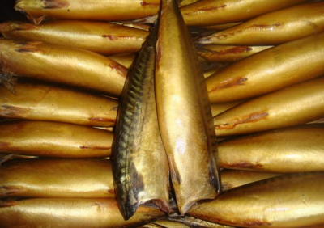
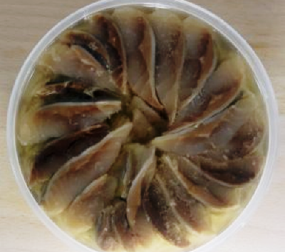

Продукция РК им.Котовского
(Цены на продукцию действуют с 01 января 2018 года)
Скумбрия

Скумбрия (без головы) холодного копчения
Цена: 370 руб./кг.

Скумбрия (филе) слабосолёная в масле
Цена: 490 руб./кг.
(Цены на продукцию действуют с 01 января 2018 года)
Скумбрия (без головы) холодного копчения
Цена: 370 руб./кг.
Скумбрия (филе) слабосолёная в масле
Цена: 490 руб./кг.
Скумбрия (макрель) — одна из самых распространенных рыб мирового океана. Размер её колеблется от 30 до 60 см. Тело скумбрии похоже на веретено и покрыто мелкой чешуей. Окрас спинки сине-зеленый, с черными, слабо изогнутыми полосками, а нижняя часть тушки и брюшко белого цвета. У скумбрии превосходный вкус и приносит неоценимую пользу. Диетологи разных стран рекомендуют эту жирную и калорийную рыбу как продукт для здорового питания.
Существуют следующие виды рыб семейства скумбриевых: японская скумбрия, атлантическая скумбрия и королевская макрель.
В рацион питания скумбрии входят различные ракообразные, мелкая рыбешка и моллюски.
Скумбрия не содержит углеводов. А вот содержание белков в ее составе 38 %, жиры составляют 62%. Мясо скумбрии также богато насыщенными, полиненасыщенными и мононенасыщенными жирами, водой, золой, холестирином, витамином B1 (тиамин), витамином B9 (фолиевая кислота), витамином B2 (рибофлавин), витамином E (ТЭ), витамином B6 (пиридоксин), витамином PP, витамином С, витамином А (ретинол), витамином H (биотин), витамином В5 (пантотеновая кислота), витамином В12 (кобаламин). Высоко содержание минералов, фосфора, йода, магния, кобальта, цинка, марганца, меди, кальция, натрия, молибдена, серы, хлора, железа, фтора.
Энергетическая ценность продукта (Соотношение белков, жиров, углеводов): Белки: 18г. (около 72 кКал); Жиры: 13.2г. (около 118,8 кКал); Углеводы: 0г. (0 кКал). Энергетическое соотношение (белки/жиры/углеводы): 37%/62%/0%
В мясе скумбрии много витаминов и минеральных веществ, помогающих здоровому человеку сохранять активность на протяжении всего дня. Минералы в составе этой рыбы стимулируют работу мозга, в особенности у детей. Худеющим людям витамин B12 помогает процессу метаболизма, стимулирует синтез ДНК и участвует в процессе насыщения клеток кислородом. Витамин D наряду с кальцием укрепляет кости человека. Скумбрия нормализует функционирование человеческих клеток, насыщая их фосфором. Омега-3 является отличным антиоксидантом, тем самым улучшая защитные функции организма человека, уменьшает холестерин в крови и снижает риск развития онкологических болезней. Огромная польза от употребления в пищу мяса скумбрии для кормящих и беременных, так как содержит вещества, положительно сказывающиеся на ребенке в утробе и новорожденных детях. Употребление скумбрии способствует сохранению женской красоты, улучшая состояние зубов, волос и кожи, являясь, также хорошей профилактикой болезней сосудов, сердца и мозга. Нормализуя обмен жиров и регулируя уровень сахара в крови, мясо скумбрии приносит огромную пользу при лечении сахарного диабета. Повышается гемоглобин, улучшается работа ЖКТ, укрепляется нервная система.
Чтобы не купить испорченную скумбрию, необходимо обратить пристальное внимание на глаза скумбрии (если у скумбрии глаза выпучены и увлажнены, яркие и наполненные — рыба свежая, в противном случае глаза выглядят высохшими и сморщенными), на жабры (у свежей скумбрии жабры чистые, красного или розового цвета, без слизи и неприятного запаха), на аромат (свежая тушка без ярко выраженного рыбного или прогорклого запаха), на внешний вид (кожа должна выглядеть увлажненной, упругой и блестящей, без посторонних пятен и дырок), на упругость (у качественной скумбрии мясо плотное, брюшко плоское, у несвежей – вздутое).